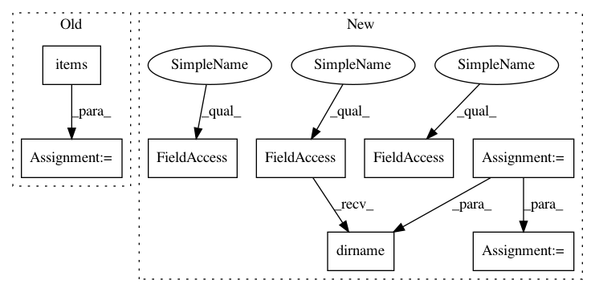

8a5e99fa839be41367ea9d67c169124f8dec4124,networkml/parsers/pcap/reader.py,,parallel_sessionizer,#Any#Any#Any#Any#Any#,246
Before Change
logger.error("exception processing {0}: {1}".format(pcap_file, err))
if csv_out_dir is not None:
for pcap_file, pcap_sessions in pcap_file_sessions.items():
pcap_to_sessioncsv(csv_out_dir, pcap_file, pcap_sessions)
return pcap_file_sessions
After Change
"""
// Process smaller files first - many small files can be processed in parallel.
pcap_files = sorted(pcap_files, key=os.path.getsize, reverse=True)
csv_filenames = {}
for pcap_file in pcap_files:
if csv_out_dir is not None:
csv_dir = csv_out_dir
else:
csv_dir = os.path.basename(pcap_file)
csv_file = pcap_filename_to_csv_filename(pcap_file, csv_dir)
csv_filenames[pcap_file] = csv_file
with ProcessPoolExecutor() as executor:
unparsed_pcaps = []
pcap_file_sessions = {}
// Retrieve pre-cached CSVs.
for pcap_file in pcap_files:
csv_file = csv_filenames[pcap_file]
if os.path.exists(csv_file):
pcap_file_sessions[pcap_file] = sessioncsv_to_sessions(csv_filename)
else:
unparsed_pcaps.append(pcap_file)
futures = {
executor.submit(sessionizer, pcap_file, duration, threshold_time): pcap_file
for pcap_file in unparsed_pcaps}
pcap_file_sessions = {}
for future in as_completed(futures):
pcap_file = futures.get(future, None)
if pcap_file:
logger.info("got sessionizer result from {0}".format(pcap_file))
try:
// 24h timeout per file.
pcap_file_sessions[pcap_file] = future.result(timeout=(24 * 60 * 60))
csv_file = csv_filenames[pcap_file]
pcap_to_sessioncsv(os.path.dirname(csv_file), pcap_file, pcap_file_sessions[pcap_file])
except Exception as err:
logger.error("exception processing {0}: {1}".format(pcap_file, err))
return pcap_file_sessions
In pattern: SUPERPATTERN
Frequency: 3
Non-data size: 8
Instances
Project Name: CyberReboot/NetworkML
Commit Name: 8a5e99fa839be41367ea9d67c169124f8dec4124
Time: 2020-01-16
Author: josh@vandervecken.com
File Name: networkml/parsers/pcap/reader.py
Class Name:
Method Name: parallel_sessionizer
Project Name: jhfjhfj1/autokeras
Commit Name: 5b8864d1863ac0474db8b657f023341686f4b1fb
Time: 2020-09-24
Author: jhfjhfj1@gmail.com
File Name: benchmark/imdb.py
Class Name:
Method Name: imdb_raw
Project Name: CyberReboot/NetworkML
Commit Name: 8a5e99fa839be41367ea9d67c169124f8dec4124
Time: 2020-01-16
Author: josh@vandervecken.com
File Name: networkml/parsers/pcap/reader.py
Class Name:
Method Name: parallel_sessionizer